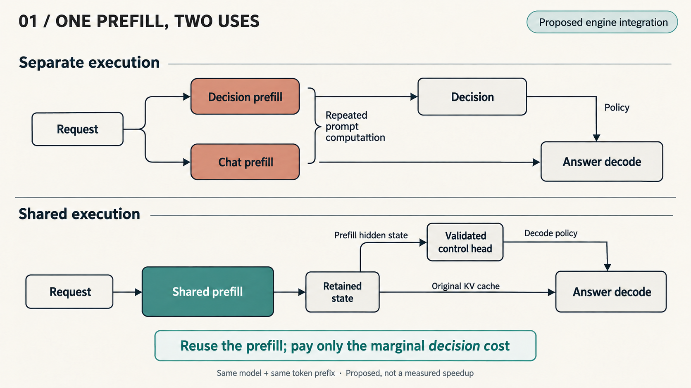
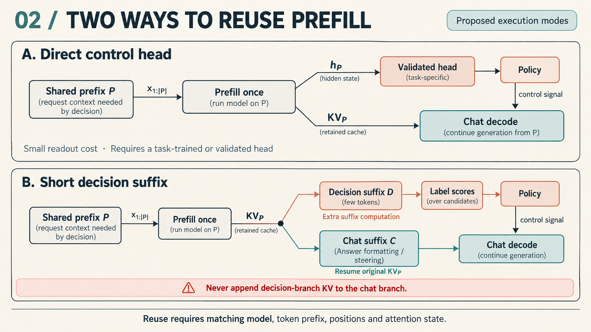
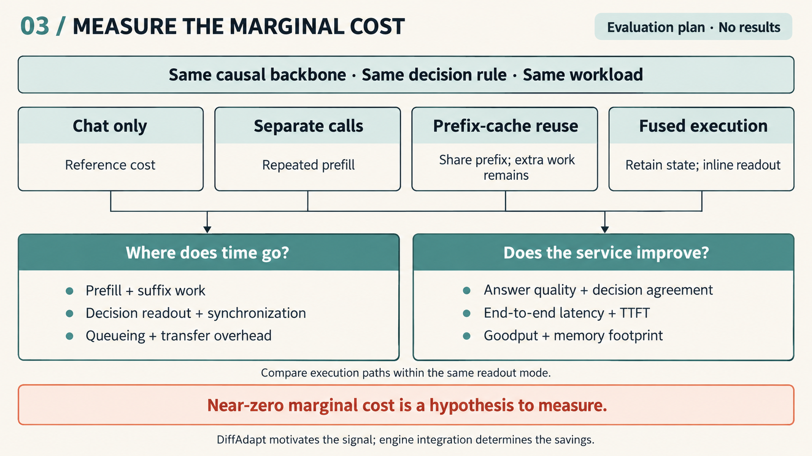

Decision API 和 Chat API 看起来是两类产品：前者返回类别、分数或布尔值，后者生成一段回答。但在普通因果生成式语言模型内部，它们可以从同一种计算开始：对输入执行 prefill，得到模型表示，再读取输出。
这带来了一个很直接的机会。如果一次 chat 本来就要做 prefill，为什么不能顺便从这次计算里取出一个 decision？
我关心的不是在 chat 前面再放一个判断模型，也不是先调用一次 decision 接口、再把同一份输入重新送入 chat。更有意思的路径在引擎内部：共享目标模型的 prefill，在生成答案的同时取得控制信号。引擎支持得足够好，决策的边际成本就可能小到接近 free lunch。
这里“免费”的对象是额外的决策，而不是模型原本就要做的 prefill。本文提出的是这个执行方式，以及它值得如何验证。
接口分开不代表计算应该重复
普通自回归 chat 在开始生成前，需要处理输入，建立供后续解码使用的状态。对于候选标签打分式的 decision，模型同样先处理输入，再读取指定位置上各个标签的分数，不必生成一段解释。
SGLang 的 decision 文档 给出了一个具体例子：普通生成模型可以通过 /v1/decisions 进行类型化判断，其底层使用 /v1/score 的 prefill 打分路径读取候选标签的 next-token 分数。这说明 decision 并不天然要求一套独立于 chat 的模型计算机制。
如果两次请求分开执行，而相同前缀未被复用，系统就会为同一份输入重复付费：一次为了判断，一次为了回答。把 API 包装做得更漂亮，并不会消除这部分重复工作。
但如果它们使用同一个模型，并共享相同的输入 token 前缀，重复的那部分计算就有机会被合并。Decision API 最值得挖掘的效率优势，可能不只是少生成几个 token，而是复用 chat 已经付出的 prefill 成本。

最紧密的实现是从同一次 Prefill 直接读出
最直接的设计是让一次 prefill 同时留下两类信息：供 chat 继续生成的 KV 状态，以及供决策模块读取的末位置隐藏表示。
一个轻量控制头读取该表示，给出策略信号；引擎据此设置输出预算、采样参数等支持的执行选项，再从原来的 KV 状态继续解码。整个请求不需要再走一次完整输入处理，也不需要把判断包装成一段文本输出后再解析。
这条路径的成本很清楚：chat 原有的 prefill 和 decode 之外，新增的是一个小型读出模块及控制逻辑。如果它足够轻，决策就可以成为 chat prefill 的副产品。
DiffAdapt 在这里提供了一项可行性证据：它能用 prefill 隐藏状态上的轻量探针选择推理策略。这说明模型读完问题时形成的表示，已经包含可用于控制后续推理的信息。它支持“先利用已有表示做决策”的想法，而不是本文的研究主体，也没有证明所有 decision 都能从同一状态可靠地读出。
具体到某个决策，控制头仍需要合适的训练或验证。普通 chat 的下一 token 分数，并不会自动成为任意业务问题的答案。重要的是，引擎可以让这个读出复用已有表示，而不是为了取得一个控制信号重新执行整段 prefill。
带问句的 Decision 也可以共享大部分工作
通用 Decision API 往往需要额外的决策问句与候选标签。例如，输入是一段长对话，决策问的是“这次请求应该使用哪种执行策略”。这时，决策分支与回答分支通常不会拥有完全相同的最终隐藏状态，但仍然可以共享此前的长前缀。
设公共前缀为 P。引擎先计算 P，并保留它的 KV 状态。决策分支在 P 后接上简短的判断后缀 D，处理 D 后读取标签分数。得到决策后，回答分支从保留的 P 状态出发，处理自己的后缀 C，再继续生成。D 只用于判断，不混入回答分支的上下文。P 必须包含做决策所需的完整请求；C 仅包含回答分支的格式标记或决策后追加的引导，不应藏有决策尚未见过的任务信息。
这样，新增成本主要来自短后缀 D 的处理、读出和分支管理，而不是再次计算整个 P。D 仍需要访问已有前缀的状态，因此它的成本也受上下文长度影响；但它没有重新运行前缀中每个 token 的完整前向计算。对于长输入、短决策问句，这种共享尤其值得尝试。
SGLang 已有前缀复用能力，decision 文档也明确提到缓存前缀会被后续打分请求复用。这里引用的现有能力是标签打分和前缀复用，并不表示 SGLang 已经实现了本文设想的原子执行路径。不过，前缀缓存和原子的“decision 后接 chat”执行还不是同一件事。本文设想的引擎集成应当明确保留共享状态、执行决策分支并继续回答，而不是只依赖两个独立 HTTP 请求碰巧命中缓存。

引擎需要把共享状态变成明确的执行能力
关键接口不一定是增加一个新的 URL，更可能是让引擎表达这样的请求：处理这份上下文，读出这些控制信号，然后沿用状态继续回答。
为此，需要把三个边界设计清楚。
共享边界。 前缀缓存的实现需要匹配实际的 token 前缀。可复用的是同一模型、同一权重或适配器配置下，具有一致 token、位置及注意力条件的公共前缀。具有不同主干权重或注意力配置的 decision checkpoint 不能直接复用 chat 的 KV；非因果注意力模型也不能仅因接口形状相同就这样复用（SGLang 文档明确对 noncausal_full_attention 禁用前缀缓存）。语义相同但模板不同的输入，不一定共享同样多的计算。将决策问句尽量放在公共上下文之后，可以保留更长的公共前缀；如果某项策略需要修改前面的系统提示，就不能原样沿用受影响部分的缓存。
读出边界。 SGLang 的请求与调度实现区分缓存匹配与输出分数计算。KV cache 是供后续注意力计算使用的状态，不等于可以随时取回全部隐藏状态或最终 logits。直接控制头需要引擎在 prefill 结束时保留或立即消费相应表示；标签打分路径则需要在正确的决策位置读出分数。把这一步做在执行现场，才能避免为取一个结果重新计算。
控制边界。 决策要在相关动作发生前可用。输出预算等解码参数通常可以在生成前设置；是否允许调整其他执行选项，取决于具体引擎和模型。决策模块提供信号，引擎负责把它接到真正可生效的控制点。
这也是共享 prefill 与“外接一个分类服务”的本质区别：前者把决策放到状态已经存在的位置，后者必须重新获得理解输入所需的信息。
先测量边际成本再测量决策收益
验证这个想法，需要把两个问题分开：计算是否真的复用了，读出的决策是否真的有用。
对于计算复用，可以在同一模型和相同工作负载下比较三条路径：独立 decision 与 chat、依赖前缀缓存的两个请求，以及引擎内显式共享 prefill 的融合执行。三条路径必须固定读出方式、决策规则和提示的 token 化方式：不能把训练好的控制头与提示式判断混着比较，再把差异算成引擎收益。以不带决策的 chat 为参照，测量额外的 prefill 工作、决策可用时间、首 token 延迟、吞吐和状态保留开销。首 token 延迟从请求到达算起，包含等待决策的时间；吞吐以固定负载下每秒完成的请求衡量。还应分别报告冷、热缓存、缓存命中率、实际重算的 token 数以及保留 KV 的占用。输入长度、决策后缀长度及并发度都应变化，不能只测一个有利样例。
对于决策收益，则检查它能否改善具体任务。例如，读取推理策略信号后，是否在保持答案质量的同时减少生成开销。DiffAdapt 可以提供一种任务与基线，但其他可从已有上下文判断的控制问题，也可以沿用同一执行思路。每一种决策都要验证自己的有效性，不能用一个成功的探针替代全部验证。
如果融合路径相对普通 chat 只增加很小的开销，而控制信号又能节约后续计算，这个 free lunch 就有了实测依据：不是凭空省掉一次推理，而是让原本只服务于生成的 prefill，同时服务于决策。

一次计算可以有不止一个出口
Chat 与 decision 在产品接口上可以保持独立，在执行层却未必需要各做一遍输入理解。
同一次 prefill，一边为回答准备状态，一边提供决策信号。 这是我想强调的核心机会。DiffAdapt 说明其中一类信号已经可以从 prefill 表示中提取；Decision API 为这些信号提供了易于消费的输出形式；引擎的工作，则是让二者真正共享计算。
如果这层支持做好，decision 就不必总是一笔额外的模型调用成本。它可以是 chat 本来就要完成的计算，顺手产出的另一种结果。